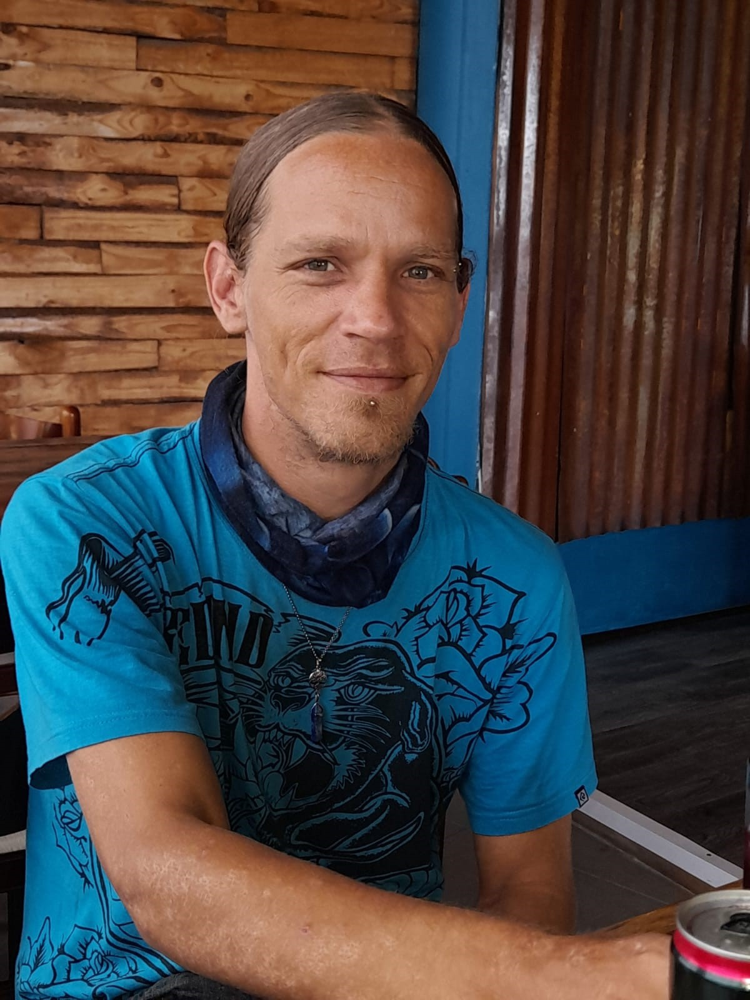

★★★★★★★★★★★★★★★★★★★★★★★★★★★★★★★★★★★★★★★★★★★★★★★★★★★★★★★★★★★★★★★★★★★
★★★★★★★★★★★★★★★★★★★★★★★★★★★★★★★★★★★★★★★★★★★★★★★★★★★★★★★★★★★★★★★★★★★
I am a hardworking, self taught individual in many skills, currently mastering the Full stack
Development ability to create and deploy professional websites.
I have a honors Bachelors Degree
in Jazz and Popular music , and have taught in a Primary school for 15 years and have decided to put
my hard work into programming as it is much more rewarding
National Intermediate Certificate
National Senior Certificate
Diploma in Jazz and Popular music (4 years including 1 year foundation course)
BPMus Jazz and Popular music (Bachelor of practical music), Honors Degree
Golden Key Internaltional Honour Society
On my academic achievement at UKZN I qualified to be a member of the Golden Key Internationa Honour Society (An International Recognition)
Online English course..... Qualifi Level 5 Certificate in Teaching English as a foreign language (168 hours) Qalification Number: 603/3835/0
Teaching English Online and One to One course (30 hours)
Online course: Udemy: Lecturer: Mosh Hamedani: 5.5 hours
Online course: Udemy: Lecturer: Mosh Hamedani: 6 hours
Online course: Udemy: Lecturer: Mosh Hamedani: 3 hours
Online course: Udemy: Lecturer: Sammeer Saini: 21.5 hours
Online course: Udemy: Lecturer: Neil Cummings: 35.5 hours
★★★★★★★★★★★★★★★★★★★★★★★★★★★★★★★★★★★★★★★★★★★★★★★★★★★★★★★★★★★★★★★★★★★
★★★★★★★★★★★★★★★★★★★★★★★★★★★★★★★★★★★★★★★★★★★★★★★★★★★★★★★★★★★★★★★★★★★
DUTIES - selling CD's, operating the till, sealing the stock, packing and repacking them out onto the shelves and placing orders, keeping up to date with all the latest music, dealing with demanding and particular customers.
DUTIES - Took stock of all the beds and wood furniture. Captured all the invoices of stock leaving and stock arriving at the warehouse. I also received stock from the companies and moved and packed and made sure the GRCS were taken care of and that it was all neat and tidy
DUTIES - First a data capturer and then a clerk
NoordHoek Farm Village, Cape Town
DUTIES - Ran the shop completely, stock, till and credit (Manager)
DUTIES - Take aways and delivery orders on the telephone
My grade 6 and 7 students are grasping the transposition of musical phrases wonderfully!
All things of value come from good values
Reference: Susan Greer
Hr Manager
St Mary's Diocesan School for girls, Kloof
0764078773